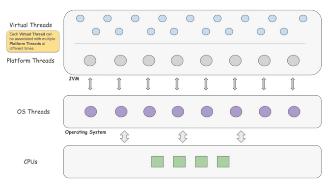

Virtual Thread

A new thread model provided by JVM, for creating lightweight application thread that maps to a platform thread
- The virtual thread can map to different platform thread at different time(Many-to-Many)
- thread stack live in heap(dynamic stack space)
Mechanism
- yield whenever it encounters IO blocking operation, made runnable again and when one becomes available
- large amount of jdk lib have rewrite for this refactor
- implementation is based on fork join pool
- context switch should be lightweight in most cases
Benefit it brings
- less overhead
- context switch occurs in application level rather than os level, stack, cache remains in hardware
- cheap to start/stop
- much lighter weight
- the tradition platform thread requires around 2MB / thread, If you wanted to support a million thread, you’d need 2TB of memory!
- virtual threads only takes up 200-300 bytes / thread
- simplicity
- write code in sequential way rather than the reactive way
- better scheduling
- scheduling by os thread is dumb as the os don't know the context of the execution thread
- on the other hand, developer have better understanding about the code and context, scheduling in application level help reduce the overhead
- scalability
- can easily support millions of virtual thread
Limitation
Pinning Issue
Pinning occurs when virtual thread cannot be unmounted from its carrier, monopolizing that carrier thread from executing other tasks
Occurs in
- Synchronized Blocks or Methods
- Native Methods or Foreign Functions
Thread Local
- as thread Local variable has its own independent copy of the variable, isolated from other threads
- caching expensive object in thread local take up huge amount of space when massive threads are created
Capable for
- IO intensive application
Bear in mind
- It is not for computational intensive task
- NOT designed highly responsive aware application(first come, first served)
- as the total throughput increase, this rule only applies on HIGHLY responsive aware application
- as it adds another layer of scheduling
- much more threads are waiting for schedule, higher chance to have starvation problem
- synchronized block is not support
Migration
-
limit carrier thread
- two ways to limit the carrier thread
- Limit the number of carrier threads by setting the system property jdk.virtualThreadScheduler.parallelism=
- Limit the maximum number of pool size by setting the system property jdk.virtualThreadScheduler.maxPoolSize=
- two ways to limit the carrier thread
-
migration is cheap, usually, one to few lines of code change, eg: changing thread pool to virtual thread factory
- migrate task to virtual thread, not pool
-
most lib and framework have stated their migration to support to virtual thread eg: spring, tomcat
-
thread local
- don't cache expensive object in thread local
- some mutable thread local object can be replaced by immutable object eg: SimpleDateFormatter -> DateTimeFormatter
- don't cache expensive object in thread local
stumbling block
- mysql jdbc
- currently not supported
- the mysql jdbc is designed to be thread safe, but the modern application usage of jdbc are thread confined
- A lock free implementation of mysql jdbc
- okio (todo hanging problem)
Best practise
- as it is lightweight, thread pool is not necessary
- limit virtual thread by semaphores
- thread per task rather than recycling the thread
- dont block long task
- causing massive virtual tasks to be blocked
Further Discussion
- combining the virtual thread with reactive model
- hard to maintain
- gain even more performance